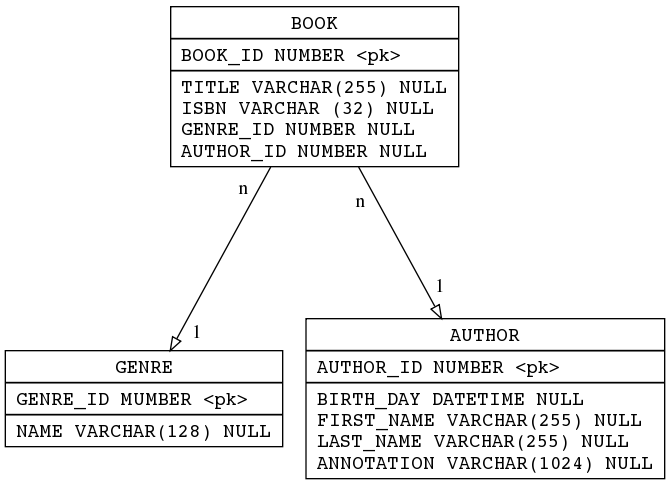
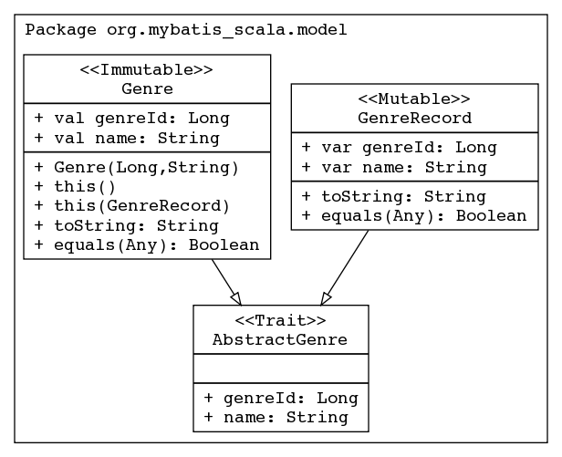
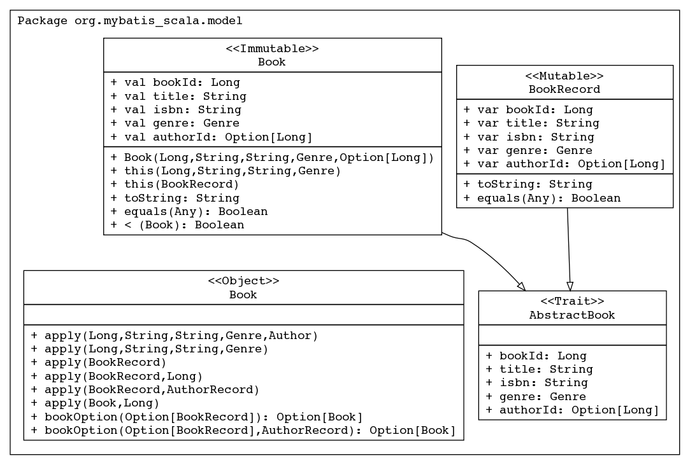
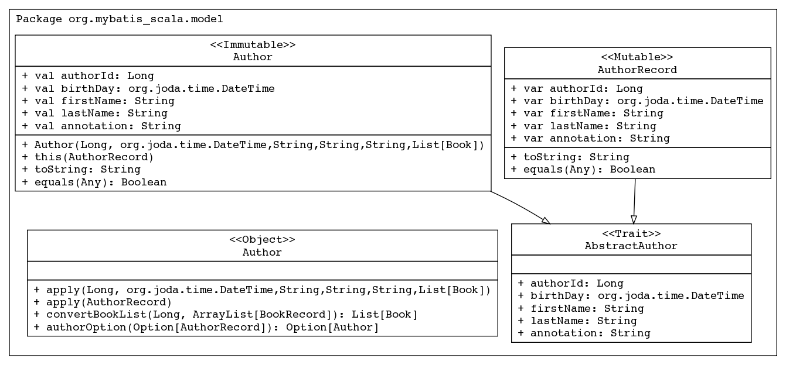
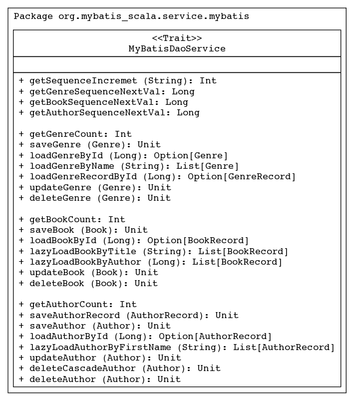

About
MyBatis Scala in Samples is just a set of working MyBatis samples with Scala program language.
It is not a library, manual or template for new project. It is just a set of samples and nothing else and I hope it could be useful for somebody. Something is wrong, something is good in this project. Please fell free to report any bug (especially in my English).
How to build
To build MyBatis Scala in Samples with sbt call "sbt test" and open index.html.
Project Information
- All samples are built around three entities: Genre, Book and Author.
- For each entity mutable and immutable classes created.
- Each sample is a specification realized with the excellent library "specs a BDD library for Scala"
Database Tables

Domain Model
Basic Non MyBatis Specifications

ModelSpec
Spec report
IDGenerator Spec
IDGenerator Spec report
Genre CRUD

Scala source
Spec source
Spec report
Book CRUD

Scala source
Spec source
Spec report
Author CRUD

Scala source
Spec source
Spec report
Service Layer

MyBatisDAOService
MyBastis SQlMap files
MyBatis.xml
Genre.xml
Book.xml
Author.xml
Known Limitations
- Immutable POJO fails to load when lazyLoading is enabled
Have to have protected constructor for class Genre. Waiting for MyBatis 3.0.2.
- Option[Long] is not null in the BookRecord class. So MyBatis treats tha Book table record [null, null, null, null, null] as BookRecord [0, null, null, null, None].
Have to filter BooRecord with bookId =0 in the Author.convertBookList method.
License
Apache License Version 2.0